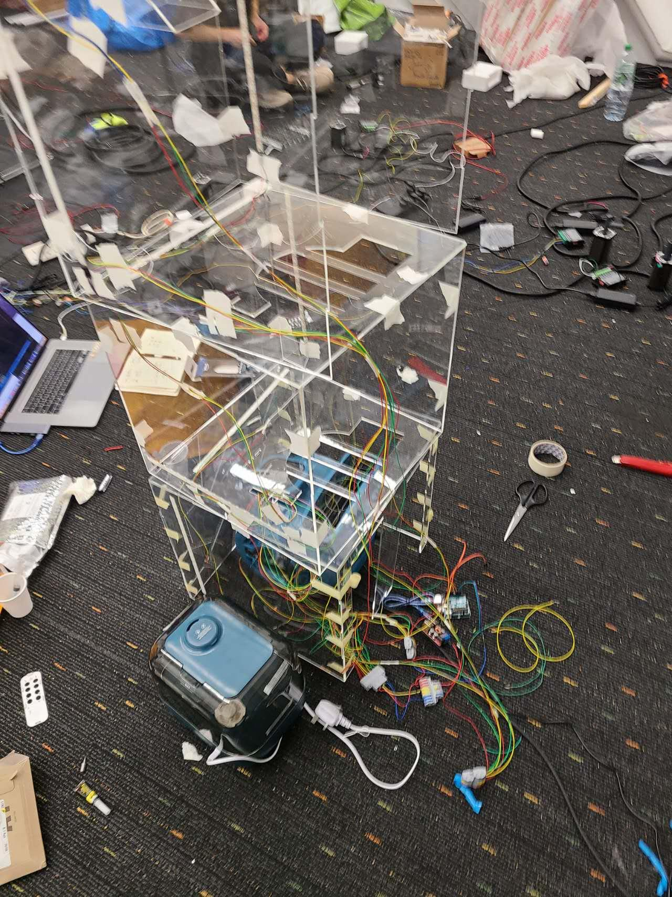
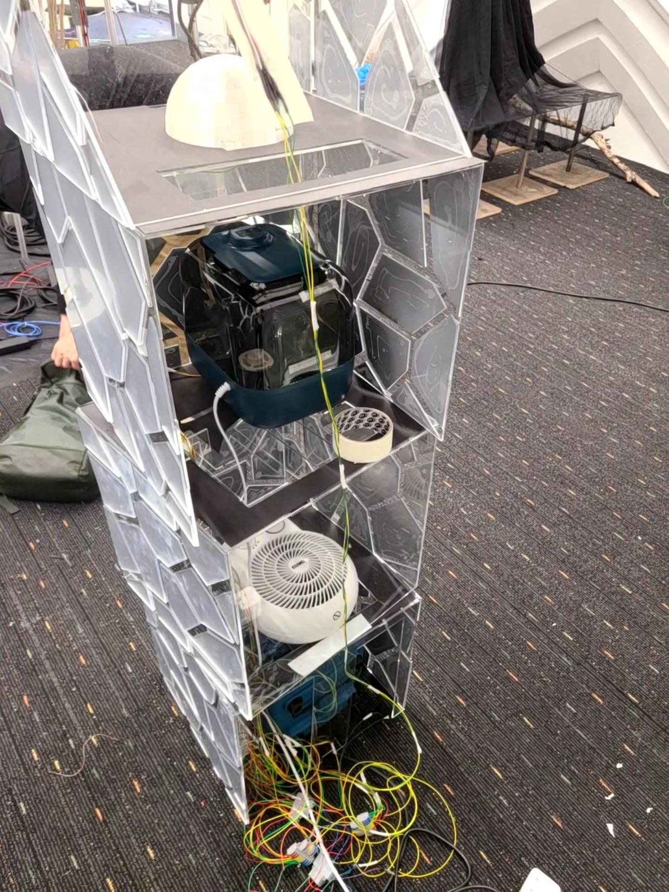
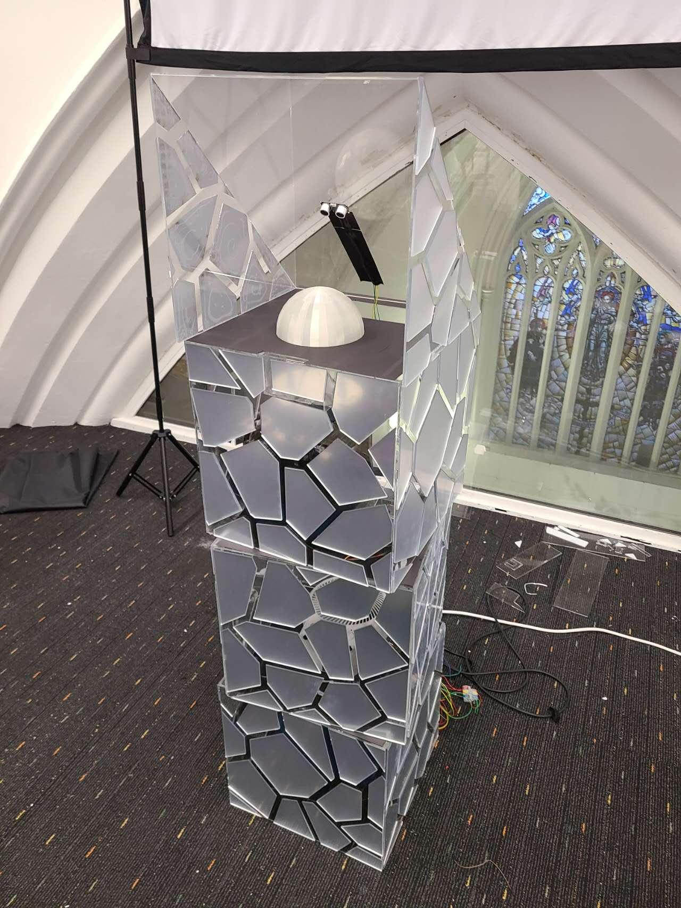
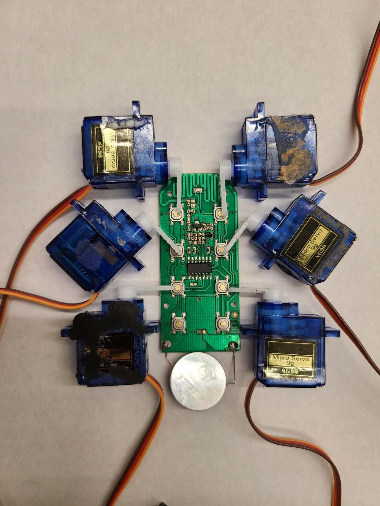
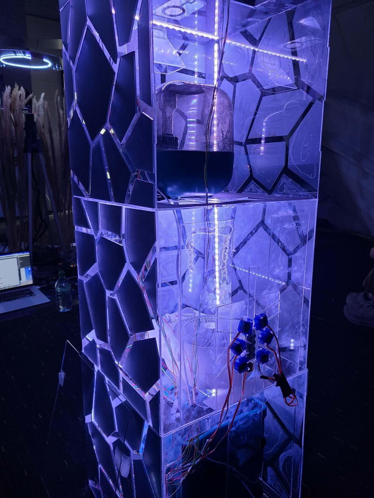
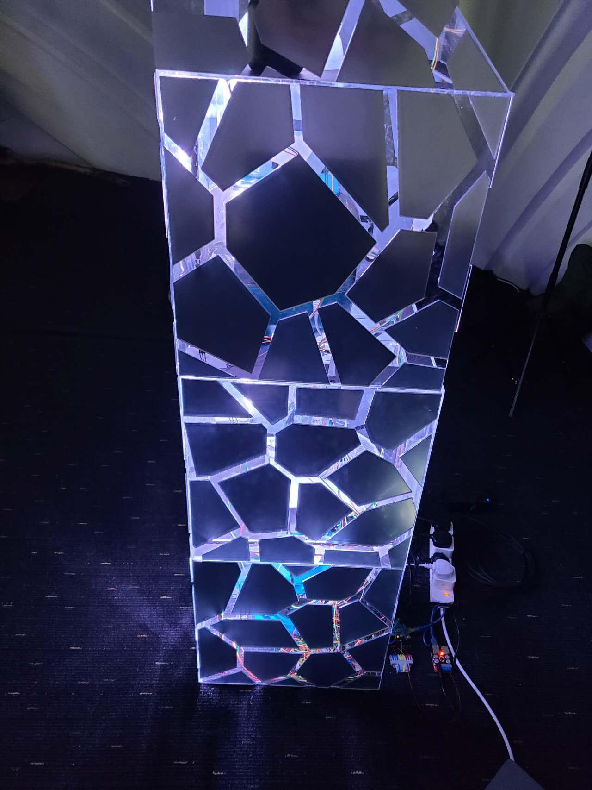
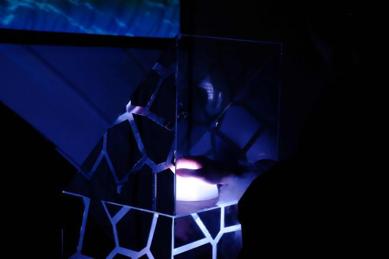

简介
在这个日益由数字通信主导的世界里，我们的人际关系变得越来越疏远。我们依赖于图像、视频和声音，往往忽略了我们丰富的感官。这个项目就是为了改变这种状况。
我的目标是创造一种将人类感官与摄影艺术相结合的装置艺术。观众不仅能看到照片，还能感受到阳光的温暖、风的轻抚和此刻的气息。这种身临其境的体验旨在重新点燃我们与世界和彼此的联系。
技术实施
我的项目实施涉及几个关键技术要素和硬件组件，以便为观众创造多感官体验。我首先确定了要提供的各种感官体验，包括模拟风、温度和空气湿度。为此，我在装置中加入了三种电器：模拟风的风扇、控制温度的风扇加热器和管理空气湿度的加湿器。
视频部分，选择使用我之前在海上钓鱼时拍摄的视频是有意为之。海上环境与我们日常所处的环境有很大不同，尤其是在风、温度和空气湿度方面。通过选择这段视频，我旨在强调这种反差，为观众提供一种独特的感官体验。
整个项目的展示形式被确定为使用投影仪进行视频投影，并结合装置本身对风、温度和空气湿度的控制。这种组合创造了一种身临其境的体验，与视频的视觉效果相得益彰。
从技术角度来看，我采用了超声波传感器来控制装置的运行。这些传感器检测人的手与装置之间的距离。当距离低于预先设定的阈值时，就会触发伺服器的运行，进而通过遥控器控制风扇、风扇加热器和加湿器的开关。
此外，我还使用了 LED 灯带，为装置的运行状态提供视觉反馈，显示装置是否正在运行。







工具
Arduino